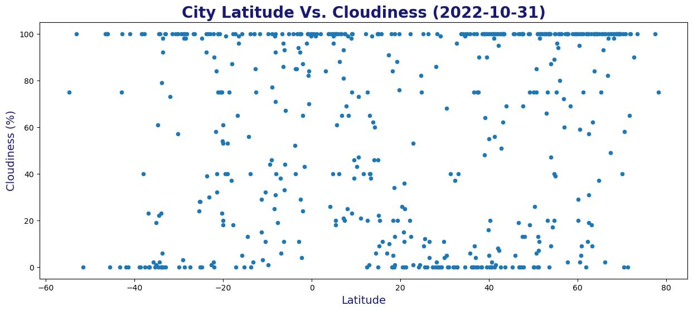

Web Design Challenge
This project aimed to analyze the weather patterns as they vary by latitude. Specifically, we will examine the temperature, humidity, cloudiness, and wind speed. First, this will be discussed overall, and then we will compare the Northern and Southern hemispheres.
Temperature Overall
In general, the average temperature around October 31 can vary depending on a number of factors, including the latitude. In general, the closer a location is to the equator, the warmer the average temperature is likely to be, while locations closer to the poles may experience cooler average temperatures.

Humidity Overall
Humidity, or the amount of water vapor present in the air, can vary depending on a number of factors, including temperature, air pressure, and precipitation. In general, the average humidity around October 31 will vary, with higher latitudes tending to have higher humidity levels.

Cloudiness Overall
Cloudiness, or the amount of clouds in the sky, can vary depending on a number of factors, including the time of year, the local weather conditions, and the presence of nearby bodies of water. In general, the average cloudiness around October 31 will vary by latitude, with higher latitudes tending to have more clouds in the sky.

Wind Speed Overall
Wind speed, or the speed at which the wind is blowing, can vary depending on a number of factors, including the time of year, the local weather conditions, and the presence of nearby bodies of water. In general, the average wind speed on October 31 will vary by latitude, with higher latitudes tending to have higher wind speeds.

Temperature, humidity wind speed, and cloudiness and can all vary with latitude, although the specific patterns of variation can be complex and depend on a number of factors, including the time of year, the local weather conditions, and the presence of nearby bodies of water. In general, as you move closer to the equator, you tend to see higher temperatures, lower wind speeds, fewer clouds in the sky, and lower humidity levels. This is because the angle of the sun's rays hitting the Earth's surface changes as you move away from the equator. At the equator, the sun's rays hit the Earth's surface at a more direct angle, resulting in warmer temperatures, more stable weather patterns, and fewer clouds in the sky. Closer to the poles, the sun's rays hit the Earth's surface at a more oblique angle, resulting in cooler temperatures, more variable weather patterns, and more clouds in the sky. However, these are just general trends, and there can be many exceptions to these rules depending on the specific location and weather conditions.
Data provided by www. OpenWeatherMap.org